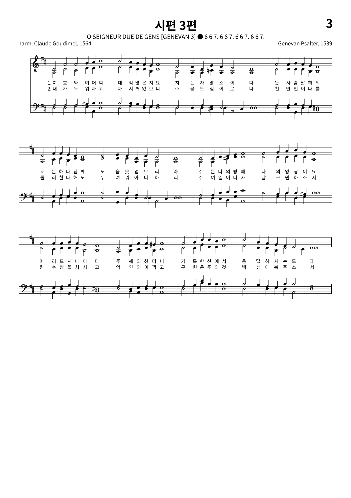

Psalm 3
O SEIGNEUR DUE DE GENS [GENEVAN 3] · 6 6 7. 6 6 7. 6 6 7. 6 6 7.
English title: O LORD, How Swiftly Grows
Tune: Genevan Psalter, 1539 · Harmony: Claude Goudimel, 1564 · Lyrics: Korean adaptation of Psalm 3 from the Korean Revised Version (AI draft adaptation · not yet theologically reviewed) · 2 stanzas
Score PDF MusicXML (for printing) MusicXML (for accompaniment, with prelude and repeats) Read Psalm 3 (Korean Revised Version)

Lyrics (Korean)
Stanza 1
여호와여 어찌
대적 많은지요
치는 자 많소이다
뭇 사람 말하되
저는 하나님께
도움 못 얻으리라
주는 나의 방패
나의 영광이요
머리 드시나이다
주께 외쳤더니
거룩한 산에서
응답하시는도다
여호와여 어찌
대적 많은지요
치는 자 많소이다
뭇 사람 말하되
저는 하나님께
도움 못 얻으리라
주는 나의 방패
나의 영광이요
머리 드시나이다
주께 외쳤더니
거룩한 산에서
응답하시는도다
Stanza 2
내가 누워 자고
다시 깨었으니
주 붙드심이로다
천만인이 나를
둘러친다 해도
두려워 아니하리
주여 일어나사
날 구원하소서
원수 뺨을 치시고
악인의 이 꺾고
구원은 주의 것
백성에 복 주소서
내가 누워 자고
다시 깨었으니
주 붙드심이로다
천만인이 나를
둘러친다 해도
두려워 아니하리
주여 일어나사
날 구원하소서
원수 뺨을 치시고
악인의 이 꺾고
구원은 주의 것
백성에 복 주소서